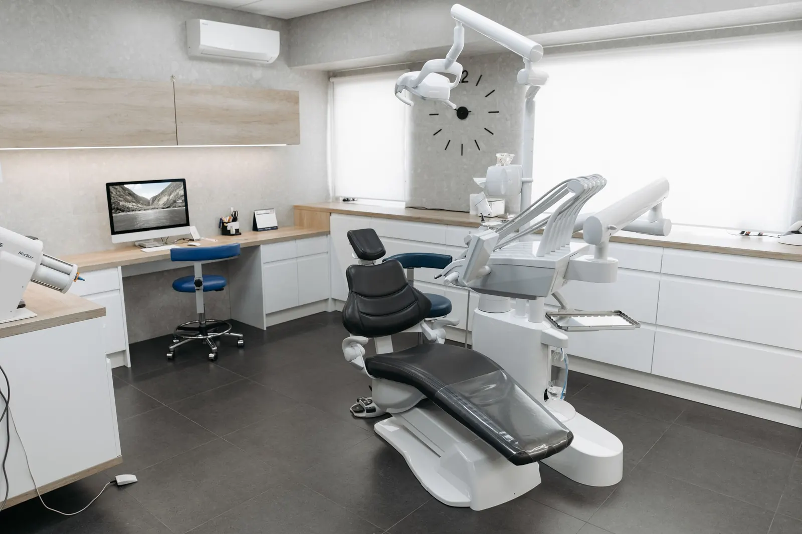
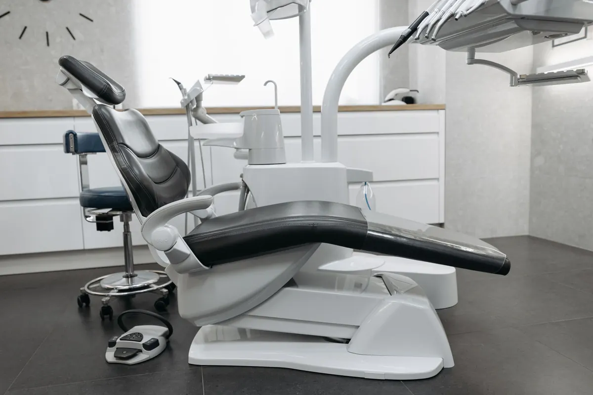
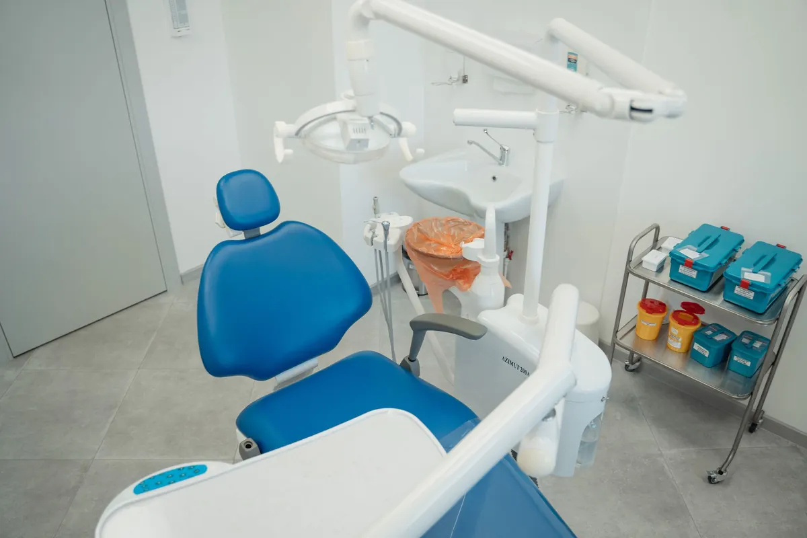
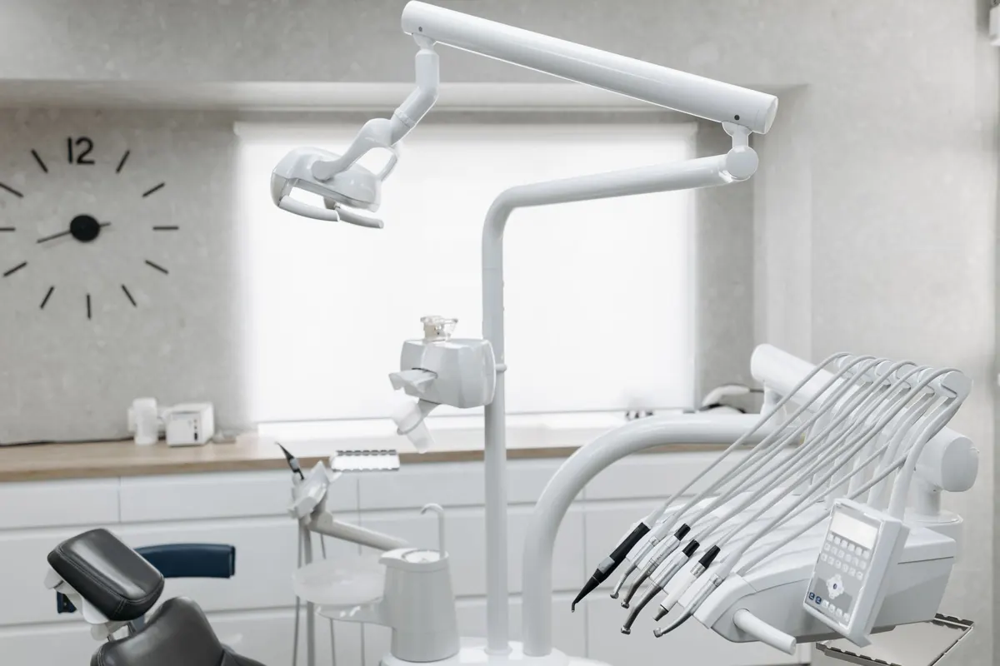

Ağız ve diş sağlığı polikliniği · Konyaaltı
Kontrol zamanınızı
biz hatırlatalım.
Muayene, koruyucu bakım ve tedavi planlaması. Randevunuzu WhatsApp'tan alın; kontrol tarihiniz yaklaşınca size haber verelim.
Ağız ve diş sağlığı polikliniği · Konyaaltı
Hizmetlerimiz
Tedavi planı muayeneden sonra hekiminizle birlikte belirlenir.
- 01Muayene ve panoramik röntgen
Ağız içi muayene, gerekli görüntüleme ve tedavi planı.
- 02Koruyucu diş hekimliği
Diş taşı temizliği, fissür örtücü, florür uygulaması.
- 03Dolgu ve kanal tedavisi
Çürük tedavisi ve kök kanal tedavisi.
- 04Protez ve implant planlaması
Eksik dişler için seçeneklerin hekimle değerlendirilmesi.
- 05Çocuk diş hekimliği
Çocuklara uygun, alıştırma odaklı randevular.
- 06Diş eti tedavileri
Diş eti kanaması ve hassasiyetinin değerlendirilmesi.
Sağlık mevzuatı gereği sitede fiyat, hasta yorumu ve önce-sonra görseli yer almaz.



Hakkımızda
Klinik hakkında
Konyaaltı'nda dört üniteli poliklinik. Her hastanın dosyasında son kontrol tarihi tutulur; altı ay dolmadan size hatırlatma gider.
Randevu, hatırlatma ve kontrol takibi tek sistemde; resepsiyon telefonla değil, hastayla ilgilenir.
Ekip (örnek)
- Dt. Deniz K.mesul müdür
- Dt. Burak S.ağız, diş ve çene cerrahisi
- Dt. Ece Y.çocuk diş hekimliği
- Gamze T.hasta koordinatörü
Sık sorulanlar
Merak edilenler
Randevuyu nasıl alırım?
WhatsApp'tan yazmanız ya da aramanız yeterli; boş saatler anında söylenir.
Randevuma gelemeyeceğim, ne yapmalıyım?
Hatırlatma mesajına “iptal” ya da yeni gün yazmanız yeterli; saat başka hastaya açılır.
Kişisel verilerim nasıl korunuyor?
İletişim açık rızanızla yapılır; veriler erişimi kısıtlı ve yedekli tutulur.
İletişim
Bize ulaşın
- AdresLiman Mah., Akdeniz Bulvarı · Konyaaltı / Antalya (örnek adres)
- SaatlerPzt–Cmt 09:00–19:00
- Telefon0242 ••• •• •• (örnek)
- WhatsAppasistanı deneyin ↓